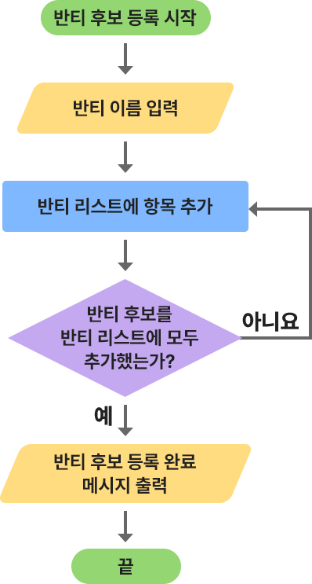

반티 투표하기(제어 구조 활용)
앞서 작성한 ‘반티 선호도 조사’ 프로그램의 두 번째 장면(투표하기)을 제어 구조를 활용하여 수정해 보자.
1
문제 이해 및 분석
총 인원이 모두 투표했는데도 계속 투표할 수 있었던 기존 프로그램을 총 인원수만큼만 투표할 수 있도록 수정한다.
프로그램 결과 미리보기
브라우저가 동영상을 지원하지 않습니다.
2
알고리즘 설계
①
바깥 반복 구조: ‘투표한 사람 변숫값 < 총 인원 변숫값’이면 안쪽 반복 구조를 실행한다.
②
안쪽 반복 구조: 반티 리스트 항목 수만큼 반복하여 점수를 입력받는다.

3
프로그래밍
①
준비하기
프로그래밍 준비하기
오브젝트
4
결과 확인 및 디버깅
프로그램을 실행하여 실행 결과를 확인해 보자.